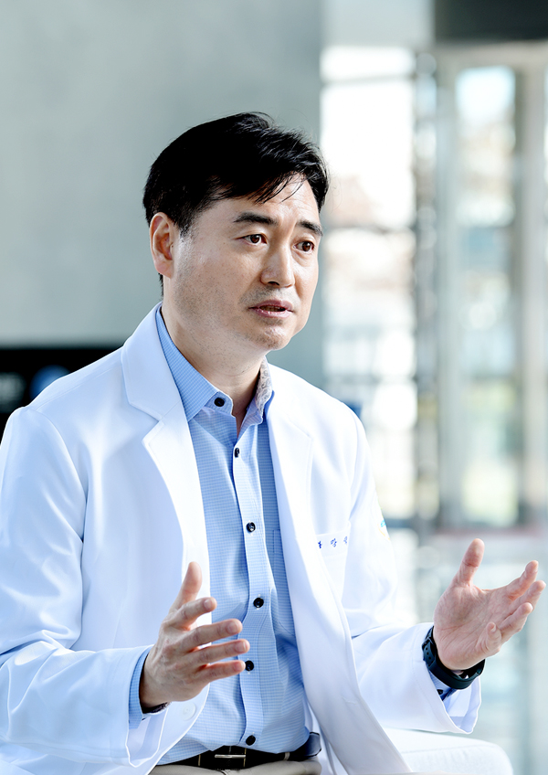
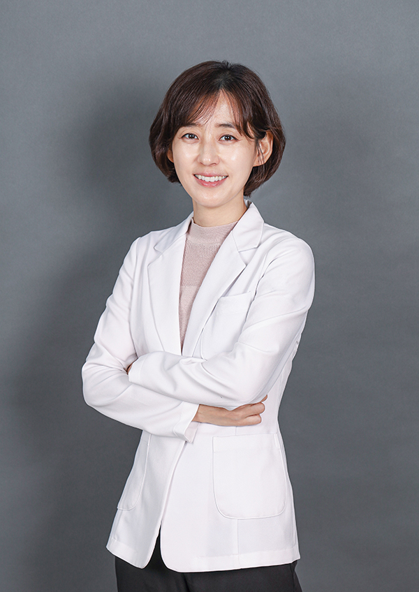

-
병원소개
- 정확한 진단과 근본적인 원인을 치료하는 병원이 되겠습니다.
의료진 소개
면역과 검진에 특화된
해밀병원 의료진입니다.
의료진

- 해밀병원
- 병원장 강석철
- 학력 및 경력
- 한양대학교 의과대학 졸업
- 아주대학교 공공정책대학원 행정학 석사
- 전) 삼성서울병원 가정의학과 전문의
- 전) KMI부산 건강검진센터장
- 현) 뉴턴암면역연구소 연구소장
- 현) 해밀병원 병원장
- 현) ㈜팀바이오 대표이사
- 학회활동
- 현) 임상통합암의학회 학술이사
- 현) 대한면역학회 정회원
- 2020 임상통합암의학회 추계 전국학술대회 발표
- 2021 한국자연의학회 4분기 세미나 발표
- 2022 임상통합암의학회 추계 전국학술대회 발표
- 2022 대한암학회 국제학술대회 포스터 발표
- 2022 대한면역학회 춘계학술대회 포스터 발표
- 2022 대한진단면역학회 춘계학술대회 포스터 발표
- 2023 임상통합암의학회 춘계 전국학술대회 발표
- 연구활동
- 2022 창업성장기술개발사업 BIG3
- 2023 고대구로병원 개방형 실험실 구축사업
- 2023 ICT 융합산업혁신기술개발사업
- 2023 AI 바우처 지원사업
- 수상이력
- 2021 보건복지부 창업경진대회 우수상
- 2022 한국바이오협회 창업경진대회 최우수상
- 2022 신용보증기금 창업경진대회 우수상
- 업무협약
- 2023 대한의료데이터협회
- 2023 Beckman Coulter_㈜안세

- 해밀병원
- 원장 서현정
- 학력 및 경력
- 순천향대학교 의과대학 의학과 졸업
- 순천향대학교 대학원 의학과 석사 졸업
- 순천향대학교 부천병원 내과 인턴, 레지던트
- 순천향대학교 부천병원 호흡기알레르기내과 전임의
- 가천대학교 길병원 소화기내과 전임의
- 현대유비스병원 호흡기내과 과장
- 뉴고려병원 소화기내과 과장
- 검단탑병원 소화기내과 과장
- 소화기내시경 세부전문의
- 대한내과학회 정회원
- 대한소화기내시경학회 평생회원
- 대한결핵 및 호흡기학회 평생회원
- 위·대장 내시경 1만사례 이상